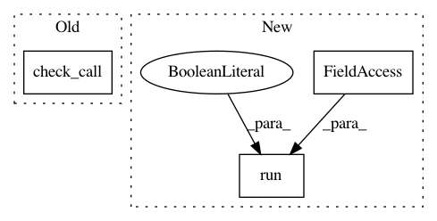

40799b4748c0faed7434af174c3cab276c476934,install.py,,pip_install_requirements,#,5
Before Change
from torchbenchmark import setup
def pip_install_requirements():
subprocess.check_call([sys.executable, "-m",
"pip", "install", "-r", "requirements.txt"])
if __name__ == "__main__":
pip_install_requirements()
After Change
print(proxy_suggestion)
sys.exit(-1)
try:
subprocess.run([sys.executable, "-m", "pip", "install", "-q", "-r", "requirements.txt"],
check=True, stdout=subprocess.PIPE, stderr=subprocess.STDOUT)
except subprocess.CalledProcessError as e:
return (False, e.output)
except Exception as e:
return (False, e)
In pattern: SUPERPATTERN
Frequency: 3
Non-data size: 3
Instances
Project Name: pytorch/benchmark
Commit Name: 40799b4748c0faed7434af174c3cab276c476934
Time: 2021-01-28
Author: whc@fb.com
File Name: install.py
Class Name:
Method Name: pip_install_requirements
Project Name: ilastik/ilastik
Commit Name: 4e162186b5ae2946292167024256e1c924761de4
Time: 2017-12-19
Author: fynn.beuttenmueller@iwr.uni-heidelberg.de
File Name: ilastik/applets/multicut/opMulticut.py
Class Name:
Method Name:
Project Name: pantsbuild/pants
Commit Name: da0989f9f00cf2a9eca58410a721d23a1fdf72bb
Time: 2019-08-19
Author: ericarellano@me.com
File Name: contrib/python/tests/python/pants_test/contrib/python/checks/tasks/checkstyle/test_checkstyle.py
Class Name: CheckstyleTest
Method Name: build_checker_wheel